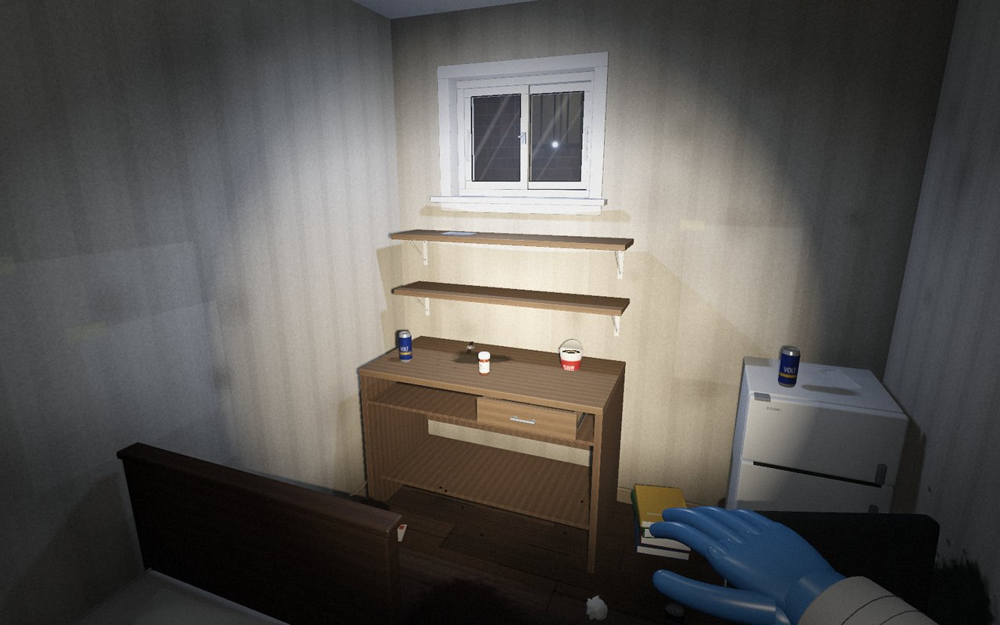
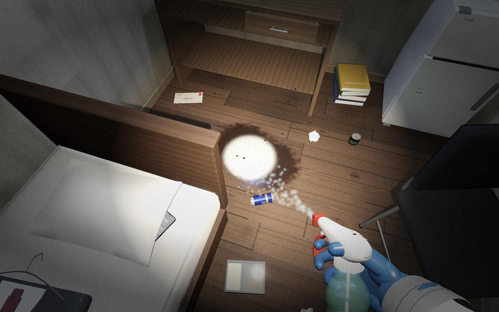
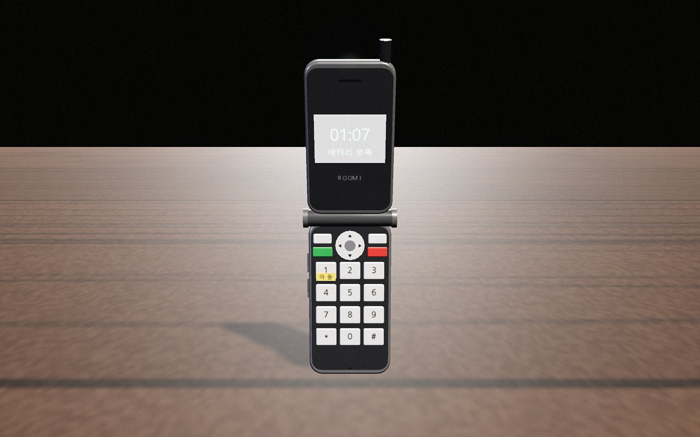
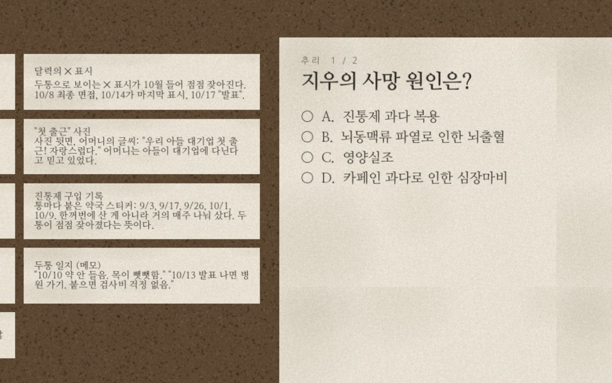

특수청소부의 기록
마지막 방
고인이 남긴 방을 치우고, 남겨진 물건으로 마지막 이야기를 듣는 1인칭 추리 게임. 방 다섯 칸, 이야기 다섯 편.

내려받기
쓰는 기기를 고르면 받는 방법이 나옵니다. Windows는 정식판, 나머지는 테스트 베타입니다.
Windows 정식 1.3.5
- 내려받은 LastRoom-Setup-1.3.5.exe를 실행합니다.
- “Windows의 PC 보호” 창이 뜨면 추가 정보를 누르고 실행을 누릅니다. 개인이 만든 프로그램이라 처음 한 번 뜨는 창입니다.
- 이용 안내에 동의하고 설치하면 바탕 화면과 시작 메뉴에 마지막 방이 생깁니다.
Android 베타 1.3.5
- 받은 LastRoom-1.3.5-android.apk를 알림창이나 내 파일에서 엽니다.
- “출처를 알 수 없는 앱” 안내가 나오면 설정을 눌러 이 출처 허용을 켜고 돌아옵니다.
- 설치를 누릅니다. 휴대폰을 가로로 들고 실행합니다.
Mac 베타 1.3.5
- 받은 압축 파일을 열고, 나온 마지막 방 앱을 응용 프로그램 폴더로 옮깁니다.
- 앱을 엽니다. “확인할 수 없음” 창이 뜨면 완료를 눌러 닫습니다.
- 시스템 설정 → 개인정보 보호 및 보안 아래쪽에서 그래도 열기를 누르면 그다음부터는 바로 열립니다.
iPhone · iPad 웹 베타 1.3.5
- Safari에서 바로 하기를 누르고, 기기를 가로로 돌립니다.
- 앱처럼 쓰려면 아래쪽 공유 버튼 → 홈 화면에 추가를 누릅니다.
- 홈 화면의 마지막 방으로 열면 주소창 없이 화면을 꽉 채워 실행됩니다.
브라우저 웹 베타 1.3.5
- 바로 하기를 누르면 내려받기가 끝나는 대로 시작됩니다.
- PC는 키보드와 마우스, 휴대폰과 태블릿은 화면을 눌러 조작합니다.
- 설치판보다 빛과 그림자가 조금 단순하게 보일 수 있습니다.
바로 하기
기록은 이 브라우저에 저장됩니다
내려받거나 실행하면 이용 안내 및 약관에 동의한 것으로 봅니다. 배우면서 만든 개인 작품이라 서비스가 언제든 끝날 수 있고, 기록이 지워지면 되살리기 어렵습니다.
한 장은 이렇게 흘러갑니다
방 한 칸이 이야기 하나입니다. 장마다 세 단계를 거쳐 고인의 마지막을 밝힙니다.

손전등 하나로 방에 들어가, 얼룩에 소독약을 뿌려 닦고 물건마다 남길지 버릴지 정합니다.

유품을 손에 들고 돌려 봅니다. UV 라이트, 잠긴 휴대폰, 숫자 자물쇠, 이중 바닥이 기다립니다.

단서를 보드에 붙여 사망 원인과 사연을 맞추고, 남겨진 편지를 전할지 태울지 정합니다.
1장합격 통보고시원 307호 — 한 평 반짜리 방, 끝나지 않은 면접
2장겨울 통장반지하 B01호 — 보일러는 한 번도 켜지지 않았다
3장필터오피스텔 1203호 — 카메라 반대편의 방
4장편도공단 원룸 202호 — 집으로 가는 기차표 한 장
5장닫힌 문아파트 9층, 지현의 방 — 6년 만에 열린 방문
테스트 베타 안내
Android · Mac · 웹은 아직 시험판이에요. 기기에 따라 느리거나 화면이 조금 어긋날 수 있어요.
휴대폰 · 태블릿 조작
- 왼쪽 화면 끌기
- 걷기
- 오른쪽 화면 끌기
- 둘러보기
- 손 · 분무기 · 스크러버
- 도구 바꾸기 (오른쪽 아래)
- 집기 · 뿌리기 · 문지르기
- 누르고 있는 동안 도구 사용
- 보관 · 폐기 · 내려놓기
- 들고 있는 물건 정하기
- 두 손가락 벌리기
- 유품 조사에서 확대
알아 두기
- 은율이 배우면서 만든 개인 작품이에요. 내용이 바뀌거나 서비스가 언제든 끝날 수 있어요.
- 저장 기록은 기기 · 브라우저마다 따로 남고, 서버에 따로 보관하지 않아요. 지워지면 되살리기 어려우니 설정 → 기록의 백업 코드로 미리 옮겨 두시면 안심이에요.
- 게임을 켤 때 새 버전이 있는지 확인해요. Windows는 게임 안에서 바로 업데이트되고, Android는 새 APK를 받아 덮어 설치하면 돼요. 웹은 늘 새 버전으로 열려요.
- Android 앱에서는 뒤로 가기 버튼을 누르면 멈춤 메뉴가 열려요.
- 휴대폰은 화면을 가로로 돌려야 실행돼요.
- PC 키보드 조작은 게임 안 조작법에서 볼 수 있어요.
죽음, 고독사, 과로, 약물 오남용 같은 무거운 이야기를 다룹니다. 게임 속 인물과 사건은 모두 지어낸 이야기입니다.